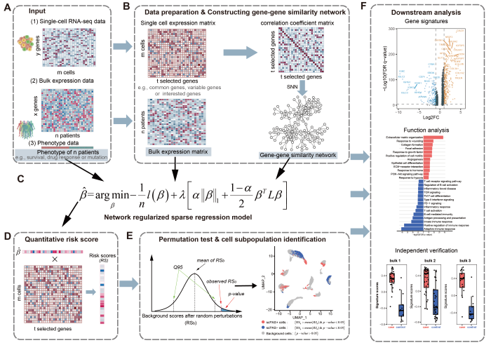

📚 Documentation
| Tutorial | Description |
|---|---|
| Quick Start | Get started in 5 minutes |
| Algorithm | Mathematical methodology |
| Visualization | Publication-ready figures |
| Survival Analysis | Cox regression case study |
| Binary Classification | Responder prediction |
Overview
scPAS (single-cell Phenotype-Associated Subpopulation identifier) is an R package for identifying cell subpopulations associated with specific phenotypes by integrating single-cell RNA-seq data with bulk RNA-seq data and phenotype information.
The method uses network-regularized sparse regression to quantify the strength of association between each cell and a phenotype (e.g., disease stage, tumor metastasis, treatment response, survival outcomes).
Key Features
- 🧬 Integrative Analysis: Combines single-cell and bulk RNA-seq data with phenotype information
- 📊 Multiple Regression Families: Supports Gaussian (continuous), binomial (binary), and Cox (survival) phenotypes
- 🔗 Network-Based Regularization: Leverages gene-gene similarity networks from single-cell data
- ⚡ Parallel Computing: Optional parallel permutation testing for faster analysis
- ✅ Seurat v4 Compatible: Works with Seurat v4 (4.0.0-4.4.0) and SeuratObject v4 (4.0.0-4.1.4)
- 🐛 Bug Fixes: Version 1.0.3 includes critical fixes for p-value calculation and improved numerical stability
Version 1.0.3 Updates (Maintainer: Zaoqu Liu)
Scientific Accuracy Improvements: - ✅ Fixed p-value calculation: Changed to proper two-tailed test (multiplied by 2) for statistically correct significance testing - ✅ Improved numerical stability: Enhanced sparse.cor() function with proper handling of edge cases and zero-variance columns - ✅ Fixed division-by-zero protection: Added guards in C++ code for zero standard deviation columns
Performance & Code Quality: - ⚡ Optimized scPAS.prediction(): Added parallel computing support and configurable permutation times - ⚡ Improved sparse_row_scale(): Better handling of sparse matrices with proper documentation - ✅ Enhanced input validation: Comprehensive parameter checking with informative error messages - ✅ Fixed typo: warnings() → warning() in imputation function
Previous Version History
Version 1.0.0-1.0.2: - ✅ Fixed sparse matrix transpose issues in sparse.cor() function - ✅ Fixed rowMeans() and colMeans() handling for sparse matrices - ✅ Fixed FindNeighbors() rownames requirement - ✅ Improved logical indexing to avoid which() errors with sparse matrices - ✅ Enhanced NA handling in correlation calculations - ⚡ Added parallel computing support for permutation tests - 📚 Improved documentation and examples
Installation
Install from GitHub
# Install devtools if not already installed
if (!require("devtools")) install.packages("devtools")
# Install scPAS
devtools::install_github("Zaoqu-Liu/scPAS")Install Dependencies
Most dependencies will be installed automatically. If needed, install manually:
# Core dependencies
install.packages(c("Rcpp", "Matrix", "methods"))
# Bioconductor dependencies
if (!require("BiocManager")) install.packages("BiocManager")
BiocManager::install("preprocessCore")
# Seurat (required)
install.packages("Seurat")
# Optional: for parallel computing
install.packages(c("future", "future.apply"))
# Optional: for ALRA imputation
devtools::install_github("KlugerLab/ALRA")Quick Start
Basic Usage
library(scPAS)
library(Seurat)
# Run scPAS analysis
result <- scPAS(
bulk_dataset = bulk_exp, # Bulk RNA-seq expression matrix (genes x samples)
sc_dataset = seurat_obj, # Seurat object with single-cell data
phenotype = phenotype_vector, # Phenotype values for bulk samples
family = "gaussian", # "gaussian", "binomial", or "cox"
permutation_times = 1000, # Number of permutations for significance testing
imputation = FALSE, # Whether to perform imputation
n_cores = 4 # Parallel computing (optional)
)
# Check results
head(result@meta.data[, c("scPAS_RS", "scPAS_FDR", "scPAS")])
# Identify significant cells
sig_cells <- subset(result, subset = scPAS_FDR < 0.05)
table(sig_cells$scPAS) # scPAS+, scPAS-, or 0Detailed Example
# Load example data
data("bulk_deconv_example")
data("pancreas_sub")
# Create a phenotype (e.g., continuous trait)
set.seed(123)
phenotype <- rnorm(ncol(bulk_deconv_example$bulk.data), mean = 50, sd = 10)
# Run scPAS analysis
result <- scPAS(
bulk_dataset = bulk_deconv_example$bulk.data,
sc_dataset = pancreas_sub,
phenotype = phenotype,
family = "gaussian",
nfeature = 3000, # Number of variable features
permutation_times = 1000, # Permutations for significance
imputation = FALSE, # Skip imputation (faster)
n_cores = 1 # Sequential processing
)
# Examine results
cat("Total cells:", ncol(result), "\n")
cat("Significant cells:", sum(result$scPAS_FDR < 0.05), "\n")
cat("scPAS+ cells:", sum(result$scPAS == "scPAS+"), "\n")
cat("scPAS- cells:", sum(result$scPAS == "scPAS-"), "\n")
# Cell type enrichment
table(result$CellType[result$scPAS_FDR < 0.05])Output Structure
Metadata Columns Added to Seurat Object
| Column | Description | Example Range |
|---|---|---|
scPAS_RS |
Raw risk score | [-0.054, 0.033] |
scPAS_NRS |
Normalized risk score (Z-statistic) | [-10.24, 6.67] |
scPAS_Pvalue |
P-value from permutation test | [0.000, 0.500] |
scPAS_FDR |
FDR-adjusted p-value (BH method) | [0.000, 0.500] |
scPAS |
Cell classification: “scPAS+”, “scPAS-”, or “0” | Categorical |
Parameters
Main Function: scPAS()
| Parameter | Type | Default | Description |
|---|---|---|---|
bulk_dataset |
Matrix | Required | Bulk expression matrix (genes x samples) |
sc_dataset |
Seurat | Required | Seurat object with single-cell data |
phenotype |
Vector/Matrix | Required | Phenotype values (continuous, binary, or survival) |
family |
Character | "gaussian" |
Regression family: “gaussian”, “binomial”, or “cox” |
nfeature |
Integer | NULL |
Number of variable features (NULL = all common genes) |
imputation |
Logical | TRUE |
Whether to perform imputation |
imputation_method |
Character | "KNN" |
Imputation method: “KNN” or “ALRA” |
permutation_times |
Integer | 2000 |
Number of permutations (1000-5000 recommended) |
n_cores |
Integer | 1 |
Number of CPU cores for parallel processing |
FDR.threshold |
Numeric | 0.05 |
FDR threshold for significance |
alpha |
Numeric | NULL |
Elastic net mixing parameter (0-1) |
Performance Tips
Speed Optimization
-
Use parallel computing (requires
futureandfuture.apply):result <- scPAS(..., n_cores = 4) # 2-4x faster -
Reduce permutations for testing:
result <- scPAS(..., permutation_times = 500) # Faster, less accurate -
Skip imputation if data quality is good:
result <- scPAS(..., imputation = FALSE) # Much faster -
Use fewer features:
result <- scPAS(..., nfeature = 2000) # Faster than 3000-5000
Memory Management
For large datasets (>10,000 cells): - Use sparse matrices - Process in batches if needed - Monitor memory with object.size()
Citation
If you use scPAS in your research, please cite:
Xie A, Wang H, Zhao J, Wang Z, Xu J, Xu Y. (2024) scPAS: single-cell phenotype-associated subpopulation identifier. Brief Bioinform 26(1):bbae655. https://doi.org/10.1093/bib/bbae655
Authors and Maintainer
Original Author
- Aimin Xie (aiminyy1993@gmail.com) - Original algorithm and implementation
Current Maintainer
-
Zaoqu Liu (liuzaoqu@163.com) - Maintenance, bug fixes, and optimization
- ORCID: 0000-0002-0452-742X
Contributing
Contributions are welcome! Please:
- Fork the repository
- Create a feature branch
- Make your changes with clear commit messages
- Submit a pull request
For bug reports and feature requests, please use the GitHub Issues page.
License
This package is licensed under the GNU General Public License v2 or later (GPL ≥ 2).
See the LICENSE file for details.
Workflow Diagram

The scPAS workflow integrates: 1. Bulk RNA-seq data with phenotype information 2. Single-cell RNA-seq data with gene-gene networks 3. Network-regularized sparse regression model 4. Permutation-based significance testing
Support
For questions and support:
- 📧 Email: liuzaoqu@163.com
- 🐛 Issues: https://github.com/Zaoqu-Liu/scPAS/issues
- 📖 Tutorial: See
vignettes/scPAS_Tutorial.Rmd